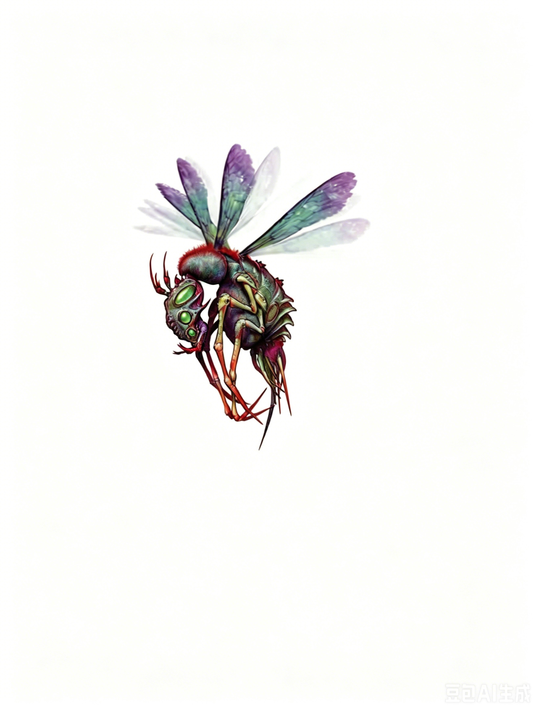

小型魔法兽 | 挑战级数 6一只大小如大型猎犬的昆虫状生物在空中振动翅膀飞行，发出嗡嗡声。它腹部伸出一根长而可怕的毒刺，显得极为危险。
噬心毒蜂 ―― 总是绝对中立。
| 生命骰 | 6d10+12（45HP） |
| 先攻 | +4 |
| 速度 | 30 英尺 (6格)，飞行 60 英尺 (良好) |
| 防御等级 | 21，接触 15，措手不及 17；闪避（+1体型，+4敏捷，+6天生） |
| 基本攻击/擒抱 | +6 / +2 |
| 近战攻击 | 毒刺 +11 (1d8 外加操控之刺或寄噬幼虫) 和 啮咬 +6 (1d4) |
| 占据/触及 | 5 英尺 / 5 英尺 |
| 特殊攻击 | 操控之刺、寄噬幼虫 |
| 特殊能力 | 黑暗视觉 60 英尺、昏暗视觉 |
| 豁免 | 强韧 +7，反射 +9，意志 +3 |
| 属性 | 力量 10，敏捷 19，体质 15，智力 1，感知 12，魅力 6 |
| 技能 | 躲藏 +11，聆听 +4，侦查 +4 |
| 专长 | 能力专攻 (操控之刺)、闪避、强化天生攻击 (毒刺) (B)、武器娴熟 |
| 语言 | 无 |
操控之刺 (Su)：类似支配怪物 (Dominate Monster)；每日 3 次；强韧 DC 19 豁免无效；施法等级 10。豁免 DC 基于体质并包含 +2 种族加值。
噬心毒蜂可以选择用毒刺攻击注入一种强效的魔法毒素，而不是植入寄噬幼虫（详见下文）。此毒素会削弱受害者的意志，使其易受噬心毒蜂的心灵控制。
噬心毒蜂的低智力限制了它对受控目标的精细指挥能力。它无法命令一群矮人工匠为其建造城堡，也无法要求一名精灵法师使用特定法术保护它。相反，它只能发出简单的指令，如"攻击"、"防守"或"搜寻食物"。
噬心毒蜂最多可同时控制等同于其生命骰数量的目标。如果超出此限制，它必须释放一个受控目标。控制会在噬心毒蜂死亡时立即解除。
寄噬幼虫 (Ex)：当噬心毒蜂用毒刺命中一个小型或更大的生物时，它会注入少量幼虫。目标必须通过一次 DC 17 的强韧豁免，否则会被幼虫感染。幼虫会缓慢地从内到外吞噬宿主。此能力的豁免 DC 基于体质并包含 +2 种族加值。
感染类似毒素，初始和次级效果均为 1d6 点伤害。初始伤害正常生效，次级伤害每轮生效一次。成功的豁免无法终止效果。感染者必须持续进行豁免检定，直到死亡、接受中和毒素或移除疾病法术，或成功通过 DC 20 的医疗检定移除幼虫为止。
如果噬心毒蜂单次受到超过 15 点寒冷伤害，它在 24 小时内无法使用寄噬幼虫能力。
噬心毒蜂是一种居住于热带沼泽和湿地的昆虫怪物。它具有强烈的领地意识，是一种孤独的生物。噬心毒蜂利用阴险的毒素控制其他生物。被控制的目标会防御它的领地、猎取猎物，并作为它后代的宿体，直至劳累致死。幼年噬心毒蜂会在宿主的肉体中穿行，随着生长逐步吞噬宿主，直至成年。
由于其令人毛骨悚然的繁殖方式和心灵控制毒素，噬心毒蜂通常被称为"深渊黄蜂"，但实际上它并非恶魔生物。
生态：噬心毒蜂是一种奇异的生物。尽管外形似昆虫，但它们本质上是独立的"蜂巢"。噬心毒蜂通过无性繁殖，每年晚秋到初冬会产下 50 到 500 颗卵。这些卵储存在噬心毒蜂腹部坚硬甲壳下的厚实橡胶状囊中。
卵在晚冬开始孵化，孵出的幼虫会立刻吞食彼此和尚未孵化的卵。到晚春时，只剩下 10 到 50 只幼虫存活。此时，亲代噬心毒蜂进入最终的繁殖阶段，变得异常具有攻击性，开始寻找宿主。噬心毒蜂利用其操控之刺令目标无法移动，并向宿主腹部注入 5 到 10 只幼虫。这些幼虫在宿主体内孵化，历时一周到一个月，逐渐吞噬宿主的内脏。之后，它们破体而出，成为成虫（初生噬心毒蜂为极小型，拥有 2HD）。这些原本的同胞因已被宿主的肉体喂饱，不会彼此攻击，而是散去寻找自己的领地。孵化后的噬心毒蜂一年内成熟，循环再次开始。
尽管噬心毒蜂的繁殖周期较短，但数量依然稀少。约四分之三的幼噬心毒蜂在寻找领地的头几个月内死于其他噬心毒蜂的攻击，而另一部分则成为其他捕食者的猎物。
噬心毒蜂的主要食物是小型鸟类、蛇和哺乳动物。除非寻找宿主，否则它们很少攻击如小型动物般大的目标。噬心毒蜂不筑巢，也没有观察到任何形式的睡眠或休眠周期。
环境：噬心毒蜂偏好温暖的沼泽地，有时也会出现在气候相似的丛林或森林中。它们无法在寒冷地区生存，低温会让幼虫进入休眠状态，从而暂时中断其繁殖周期。
典型身体特征：噬心毒蜂从下颚到尾刺全长约 4 英尺，翅膀展开时宽达 9 英尺。当体内充满幼虫时，其体重可达 120 磅。
噬心毒蜂避免与同类接触，而是依赖受控生物协助防御、巡逻领地并击杀入侵者。典型的噬心毒蜂会控制几只意志较弱的动物，如狼或熊等。面对入侵者时，它会命令这些守卫攻击，同时躲藏起来观察战斗。如果有机会，它会迅速出击，控制攻击者的一员并将其转而对付其他敌人。
噬心毒蜂通常避免直接冲突。它倾向于使用幼虫削弱敌人力量或迫使对方离开其领地。然而，没有受控生物的噬心毒蜂会变得极具攻击性，主动寻找潜在目标，优先针对独行生物以避免干扰。
与其外形类似的昆虫不同，噬心毒蜂从幼虫宿主体内破壳而出后便以完全成熟的形态独居。每一只噬心毒蜂都是独立的"女王"，如同普通昆虫一般，它们不容许另一只"女王"进入自己的领地。冒险者通常会与噬心毒蜂及其受控目标对峙。
个体 (EL 7)：当地村庄的农民传说附近的"闹鬼"沼泽常有牛、猪和人失踪。村民们确信沼泽闹鬼，实际上是一只噬心毒蜂栖息于此。该噬心毒蜂奴役了两名猎人（3级人类巡林客）。若玩家角色进入沼泽，噬心毒蜂会指挥猎人攻击他们。为了避免杀害这些无辜者，玩家角色需要用非致命手段制服猎人，或者找到并击败噬心毒蜂。
噬心毒蜂会为其简单的巢穴收集明亮、有光泽的物品，如硬币、金属等。它可能命令受其控制的类人生物交出所有此类物品，武器和盔甲除外。"无趣"的物品，如卷轴或靴子，不会成为噬心毒蜂收藏的一部分。
提取的噬心毒蜂毒液是一种备受追捧的商品，在使用此类毒药的人群中极为抢手。毒液每剂售价 50 金币，一只成年噬心毒蜂可以提供 1d4 剂毒液。
噬心毒蜂的毒刺在某些地区十分珍贵，常被制成装饰匕首，有时甚至被制作成毒匕首 (Dagger of Venom)。完整的毒刺在此风尚流行的地区售价可达 1,000 金币，在其他地方售价约为 500 金币。
在艾伯伦：噬心毒蜂原产于艾伦诺 (Aerenal) 的茂密丛林和沼泽。有些噬心毒蜂已迁移到科瓦雷 (Khorvaire) 的南部地区，包括影沼 (Shadow Marches) 和卓姆 (Droaam) 的沼泽。
在费伦：噬心毒蜂起源于楚尔特 (Chult) 广袤的丛林，逐渐向北和向东蔓延，进入费伦 (Faern) 更加文明的地区。它们在南方沼泽最为常见，包括哈鲁阿 (Halruaa) 以东的大沼泽 (Great Swamp)，甚至有报道称它们出现在北方的图恩沼泽 (Marsh of Tun)。
拥有 奥术知识 (Knowledge (Arcana)) 技能的角色可以了解更多关于噬心毒蜂的信息。成功的技能检定可以揭示以下内容，包括较低 DC 的信息。DC 15 的位面知识会否定噬心毒蜂是炼狱生物的谣言。
DC 16 (知识：奥术)：噬心毒蜂是魔法兽，外形类似昆虫。此结果揭示所有魔法兽特性。
DC 21 (知识：奥术)：噬心毒蜂体型虽小，但异常坚韧。需要多次重击才能击败它。
DC 26 (知识：奥术)：噬心毒蜂毒液具有魔法的操控心灵属性，噬心毒蜂用此能力为幼虫寻找宿主。
DC 31 (知识：奥术)：噬心毒蜂幼虫的感染可能致命，但可以用治疗疾病的魔法治愈。此外，寒冷伤害可以抑制这种攻击。